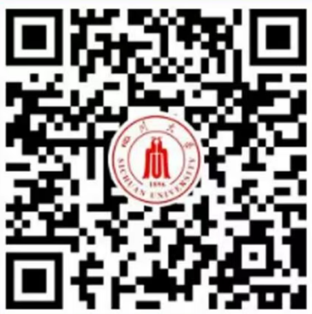

学院通知 · 科研创新
四川大学第十三届全球青年学者论坛暨建筑与环境学院分论坛诚邀海内外英才
发布时间：2025-10-24
论坛简介 四川大学全球青年学者论坛，是学校全面实施人才强校战略，加快建设世界一流大学步伐，推进“全球英才汇聚工程”“双百人才工程”的重要平台，已成为四川大学的重要引才名片。论坛目前已成功举办十二届，吸引了来自30多个国家和地区的3000余位优秀青年人才来校交流，线上参会人数超5万。 第十三届全球青年学者论坛诚邀海内外优秀青年人才共聚成都，共话发展。本届论坛涵盖了自然科学、工程技术、医学、生物与药学、人文社科等多个学科领域，旨在搭建海内外高层次青年人才感知学校事业发展、跨学科多领域学术交流、学院与青年人才对接的平台，为推进学校世界一流大学建设、建设具有全国影响力的创新人才聚集高地和科技创新中心提供更有力的人才支撑。 论坛安排 1. 形式：采取线上线下相结合的方式； 2. 主论坛： 2025年 11月2 7 日上午9:00（线下+线上直播），学校主论坛将邀请部分学者到校参会，并通过视频会议形式向全球进行同步直播。11月2 7 日下午16:00（线上回播）； 3. 分论坛：11月2 8 日上午9:00（线下+线上直播），学院分论坛及学科推介、视频交流、线上线下洽谈等多种形式、组织开展分论坛活动。 参会条件 1.在国内外知名大学、科研机构已经或即将取得博士学位； 2.具有海外科研工作经历并取得突出学术成果者优先； 3.立志在国内发展、有意来四川大学干事创业。 报名方式 1.论坛分线上及线下两种报名方式，对优秀海内外青年学者学校将邀请线下参会并提供差旅支持。交通费报销额度，国外不超过10,000元/人，国内不超过5,000元/人。 2.各学科甄选报名信息后，将向线上参会学者发送会议直播入口，向线下参会学者发送来校邀请函，请您耐心等待。 3.线上参会者报名截止日期11月26日，线下参会者报名截止日期11月19日。 报名二维码 人才需求 1.顶尖人才 在服务国家重大战略需求和经济社会发展等方面发挥重大作用、站在学科最前沿、具有赶超和引领国际先进水平的学术大师和战略科学家。 2.领军人才 取得国内外同行公认的重要成就，在海内外具有较大影响力，具有带领团队协同攻关能力的领军人才；或长期从事教学一线工作，对教育思想和教学方法有重要创新，教学成果和教育质量突出，在学生培养方面取得重要贡献的领军人才。 3.优秀青年人才 取得具有重要学术影响的标志性研究成果，具有成为该领域学术带头人或杰出人才的发展潜力。 4.青年人才 ◾ 博士后 在所从事研究领域崭露头角，获得较高学术成就，具有较强的创新发展潜力，包括世界一流大学或一流学科博士后、世界知名大学博士后、发达国家和地区博士后。其他海外人才和部分特殊海外人才等。 ◾ 博士 年龄不超过35岁；具有国内外高水平大学博士学位，有良好的科学研究经历和教育背景，符合岗位要求的资格条件和工作能力。 5.双百人才 ◾ 双百人才工程A计划 年龄一般不超过42周岁（特别优秀者可适当放宽)，取得国内外同行公认的重要成就，在学科建设、人才培养、科学研究、技术创新等方面的学术带头人。 ◾ 双百人才工程B计划 年龄一般不超过35周岁(海外引进可放宽至38周岁)，具有卓越的科研攻坚和技术创新潜力，取得突出学术成果的青年杰出人才。 ◾ 双百人才工程C计划（海外青年专项） 年龄一般不超过38周岁，具有科研攻坚和技术创新潜力的海外青年人才。 6.“海纳博士后”支持计划 年龄不超过32周岁，具有海内外高水平大学博士学位，拟进站或新近进站到我校从事博士后研究工作的人员。 建筑与环境学院简介 建筑与环境学院前身是由教育部批准成立于1988年的城建环保学院。设土木工程系、力学科学与工程系、环境科学与工程系和建筑系；有力学、土木工程、环境科学与工程、城乡规划学4个一级学科；有固体力学、岩土工程、生物医学工程3个国家重点学科；有工程力学、土木工程、环境工程、建筑学4个本科专业，均为国家级一流建设专业；有国家烟气脱硫工程技术研究中心、深地科学与工程教育部重点实验室，有破坏力学与工程防灾减灾、生物力学工程、环境工程、有机废弃物资源化利用4个四川省重点实验室；有教育部西部资源与环境网上合作研究中心、四川省力学实验教学示范中心。学院形成了一套完备的人才培养体系和科研体系。 学院现有教职工246人，专任教师200人，正高级职称52人、副高级职称79人，博士生导师59人。其中，国家杰出青年科学基金获得者等国家级领军人才7人，国家级青年人才10人，国家首批百千万人才工程入选者1人，教育部跨/新世纪优秀人才2人，爱思唯尔中国高被引学者4人，四川省高层次人才17人，四川省学术和技术带头人及后备人选39人。 学院具有优良的办学条件与实力雄厚的科研平台，在江安校区，拥有独立的学院大楼，各类实验室面积达到1万余平米，仪器价值1.8亿元。拥有国家工程中心1个，教育部重点实验室1个，四川省重点实验室5个，国际交流合作研究所5个，综合实验室6个。近年来承担了包括国家重点研发计划、国家自然科学基金重点项目在内的国家重大、重点项目100余项，牵头获国家自然科学奖2项、国家技术发明奖1项、部（省）级一等奖10余项。 学院坚持“学术为本、教学领先、厚德载物、宁静和谐”的办学理念，紧跟国家战略部署，主动服务城镇化绿色发展、“一带一路”走出去等战略，以开放的姿态，持续创造条件，吸引一流人才，努力实现建成一流学科、一流专业的宏伟目标。 联系方式 [学院]胡老师：028-85405662，huqidan@scu.edu.cn； [土木学科]王老师：bin.wang@scu.edu.cn； [力学学科]田老师：xbtian@scu.edu.cn； [环境学科]熊老师：scuxzk@scu.edu.cn； [城规学科]冯老师：fengtian@scu.edu.cn。 四川大学建筑与环境学院诚邀海内外英才。我们将为您提供自由的学术环境、良好的工作条件和优厚的薪酬待遇，助您施展才华、成就学术梦想，携手共建世界一流的新工科学院！
